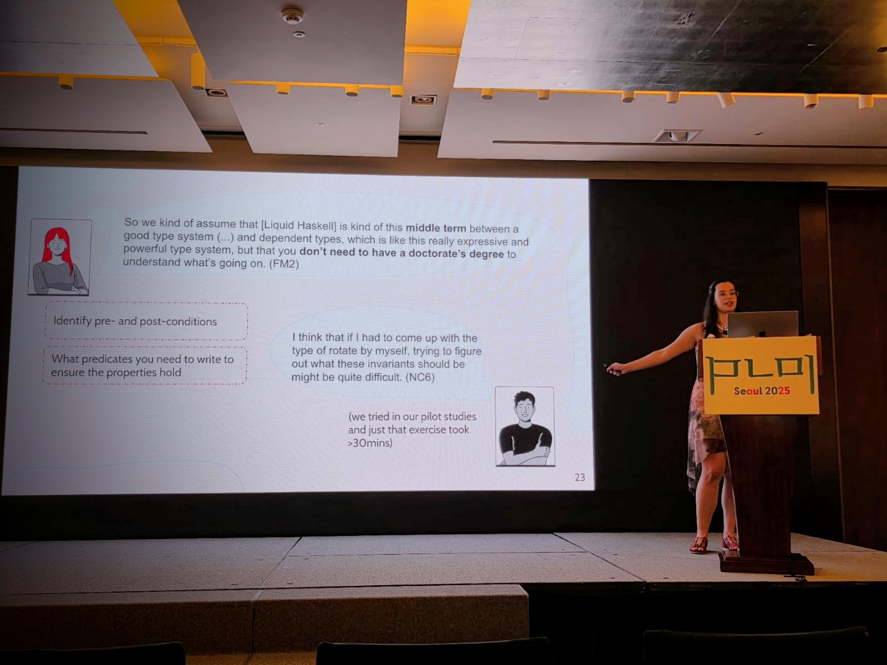

PLDI 2025, Seoul, South Korea
Usability Barriers for Liquid Types
PLDI 2025 - Conference on Programming Language Design and Implementation, CORE A*. Proc. ACM Program. Lang. 9, PLDI, Article 224.
Liquid types catch more bugs, yet few developers use them. We watched 12 newcomers and 7 experienced users of LiquidHaskell and found nine barriers.
Poster for PLDI 2025
Nine barriers
Figure 2 of the paper. Dots show who ran into each barrier. Select one to see it in practice.
Counts show who mentioned each barrier, not how common it is.
How we studied it
Two protocols, one per group (Figure 1). Select a step for details.
Why experienced users chose liquid types
One error message, three problems
A newcomer forgot to apply qsize to v on line 6. This is the message they got (Figure 3).
{-@ measure qsize @-}
qsize :: Queue a -> Int
qsize (Q f b) = size f + size b
-- | Queues of size `N`
{-@ type QueueN a N = {v:Queue a | qsize v = N} @-}
{-@ emp :: QueueN _ 0 @-}Error: Illegal type specification for `Tutorial_09_Case_Study_Lazy_Queues.emp`
Tutorial_09_Case_Study_Lazy_Queues.emp :: forall a .
{VV : (Tutorial_09_Case_Study_Lazy_Queues.Queue a) | qsize == 0}
Sort Error in Refinement: {VV##0 : (Tutorial_09_Case_Study_Lazy_Queues.Queue a##a2cb) | Tutorial_09_Case_Study_Lazy_Queues.qsize == 0}
The sort func(0 , [(Tutorial_09_Case_Study_Lazy_Queues.Queue @(42)); int]) is not numeric
because
Cannot unify func(0 , [(Tutorial_09_Case_Study_Lazy_Queues.Queue @(42)); int]) with int in expression: Tutorial_09_Case_Study_Lazy_Queues.qsize == 0
because
Invalid Relation Tutorial_09_Case_Study_Lazy_Queues.qsize == 0 with operand types func(0 , [(Tutorial_09_Case_Study_Lazy_Queues.Queue @(42)); int]) and intqsize v, LiquidHaskell accepts the program.Select a problem above, or .
What tool builders can do
The barriers came from LiquidHaskell, but most apply to other liquid type systems, like LiquidJava and Flux.
Verification
- Plan for refactoring code to fit verification.
- Style checkers for names in specifications.
- Show which functions can be lifted into specifications.
- Start lightweight, with pre- and postconditions.
Developer experience
- Errors that point to the real source.
- Highlighting and suggestions inside predicates.
- Resources for every level, debugging tricks included.
- Setup that works in the first five minutes.
Scalability
- Caching, parallel checks, or checks in CI.
- Feedback on what the solver can decide.
- A clear path from automatic to manual proofs.
[Developers] will probably go on the first day of their job and test it, and if they can use it in the first 5 min, they'll probably try to use it later on. If they cannot set it up on the first 5 min, they'll probably give up and don't touch it for at least a couple of months.FM2

At PLDI 2025
Presenting the paper in Seoul, South Korea.
Cite
@article{gamboa2025usability,
title = {Usability Barriers for Liquid Types},
author = {Gamboa, Catarina and Reese, Abigail and
Fonseca, Alcides and Aldrich, Jonathan},
journal = {Proceedings of the ACM on Programming Languages},
volume = {9},
number = {PLDI},
articleno = {224},
year = {2025},
publisher = {ACM},
doi = {10.1145/3729327}
}